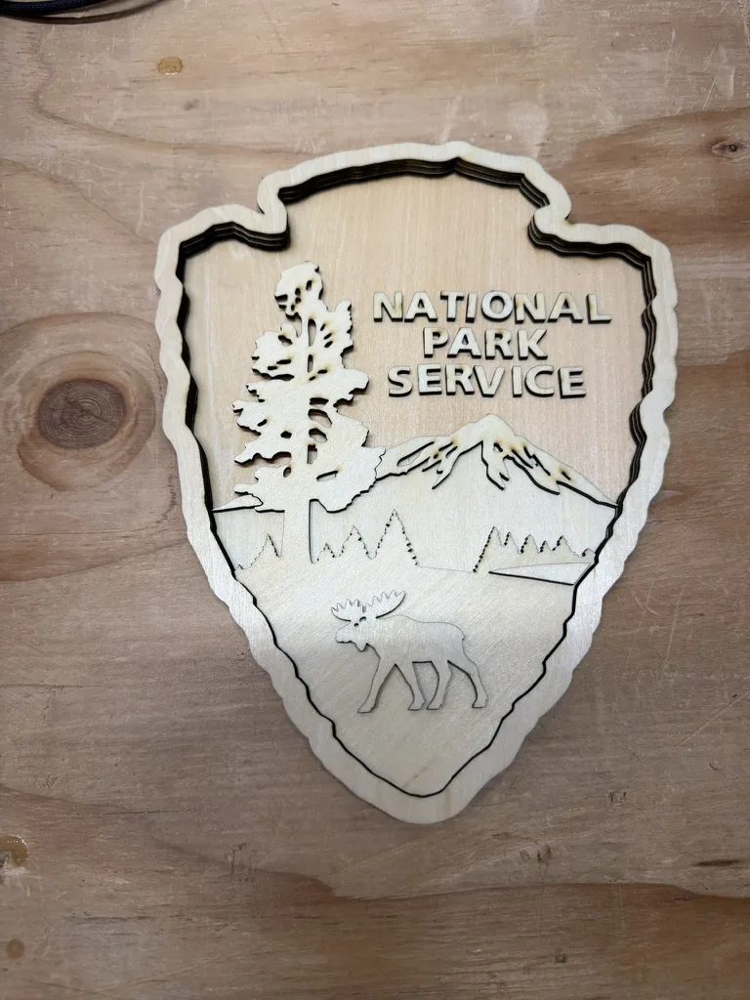
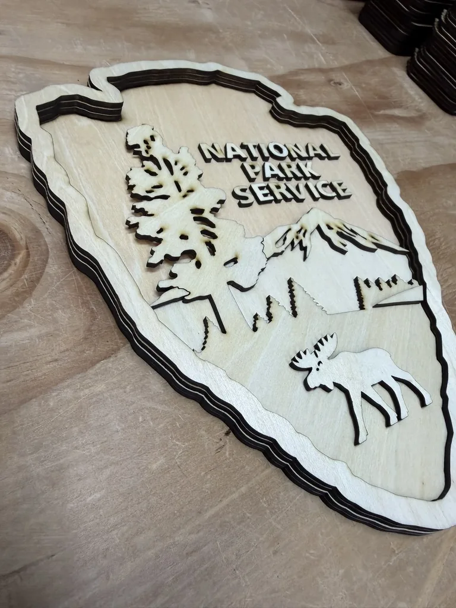
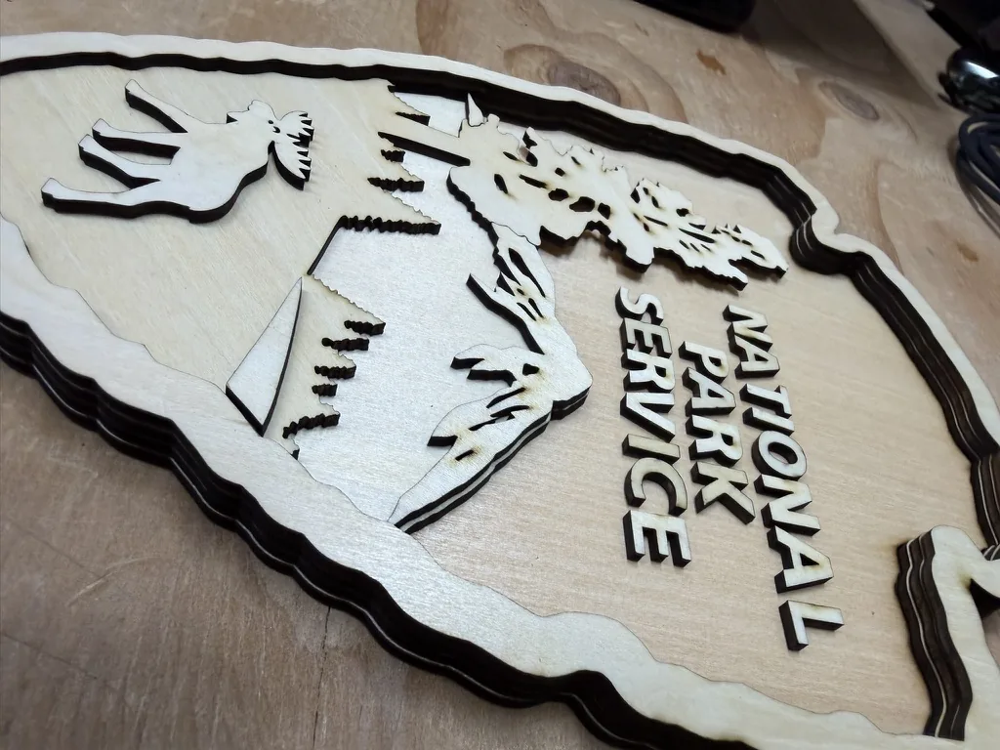
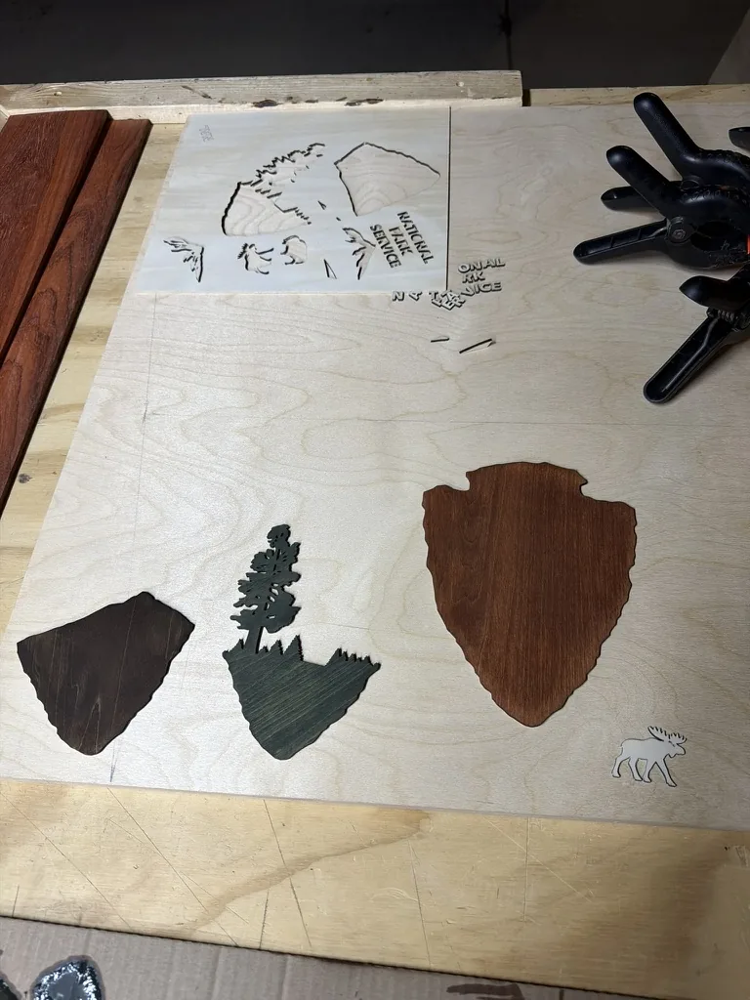
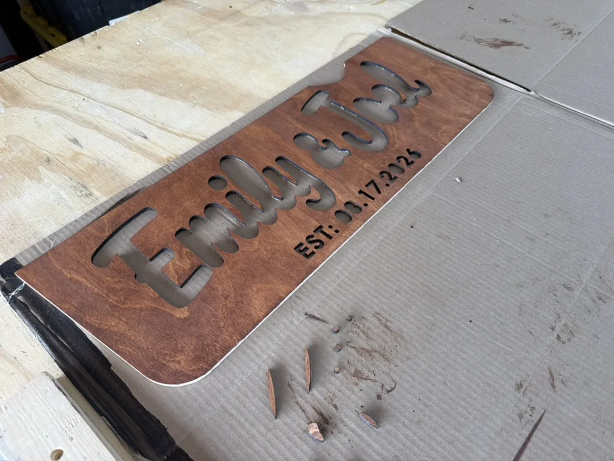
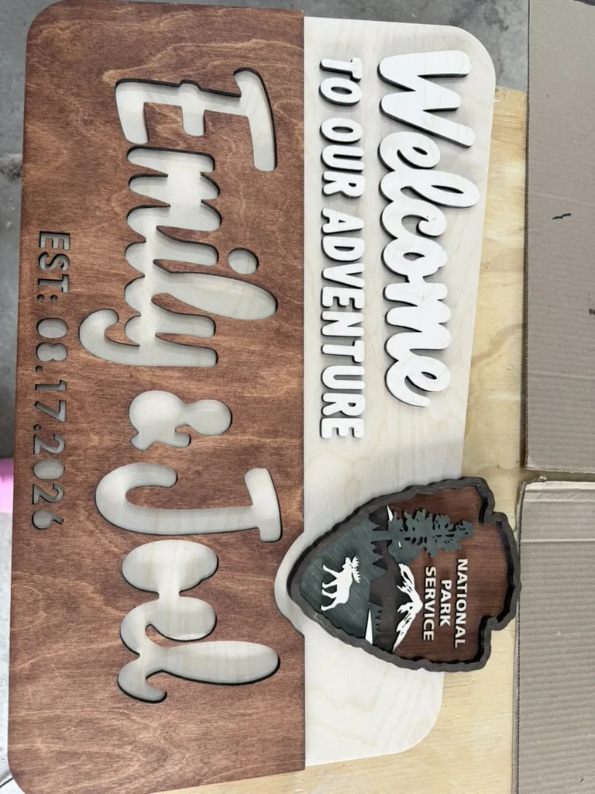
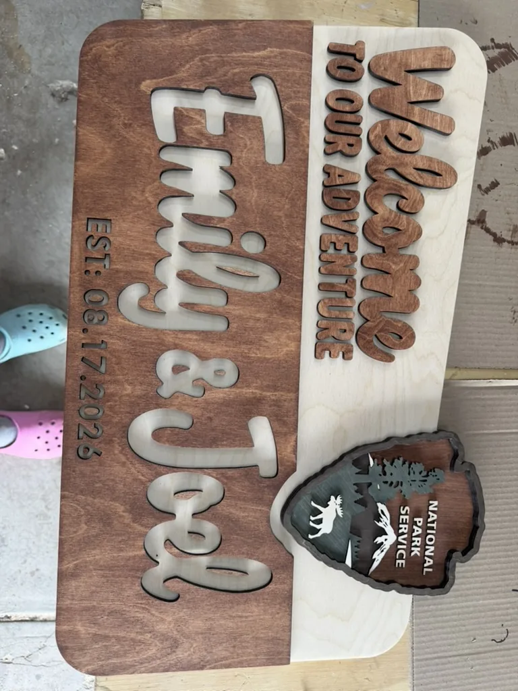
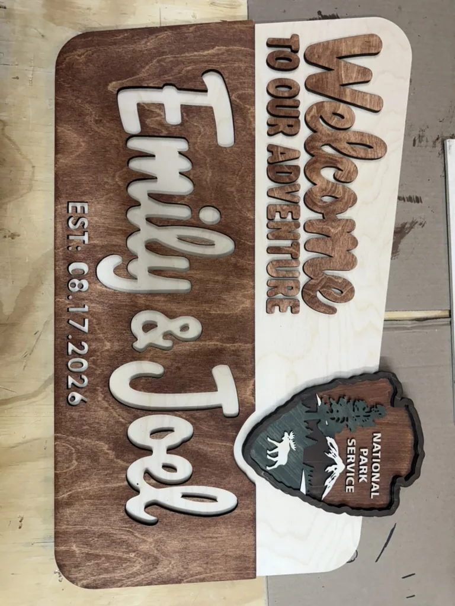

Skip to content← Back to the storyWelcome sign
Photos & screenshots
 The finished sign, welcoming guests at the wedding.
The finished sign, welcoming guests at the wedding.
The layered badge before staining: the tree, mountain, lettering and animal are separate details.
A side view shows the stacked layers and the depth of the laser-cut pieces.
A close look at the small lettering and landscape pieces before finishing.
Separate stained elements, ready for careful micro-glueups.
The cut and stained name panel before assembly.
Fitting the lettering, name panel and finished badge together.
Stained lettering and the badge on the assembled sign.
The complete sign before mounting for display.